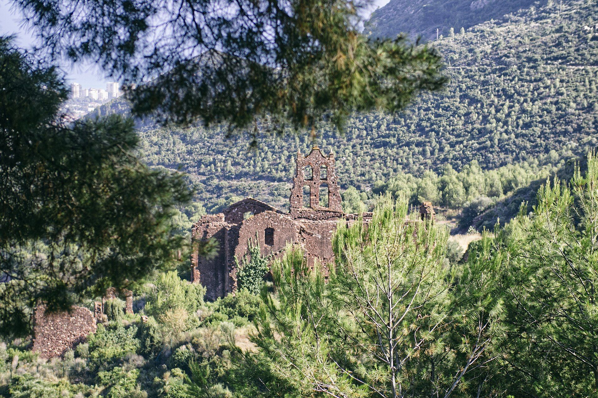
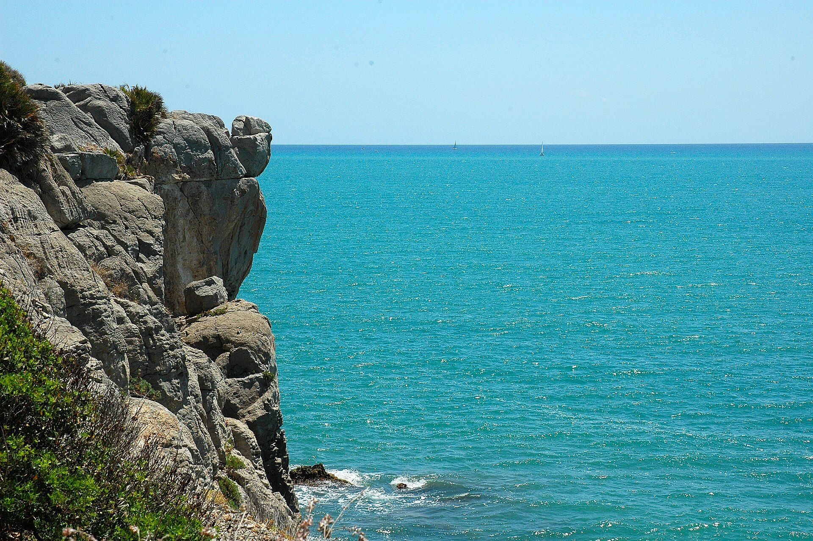
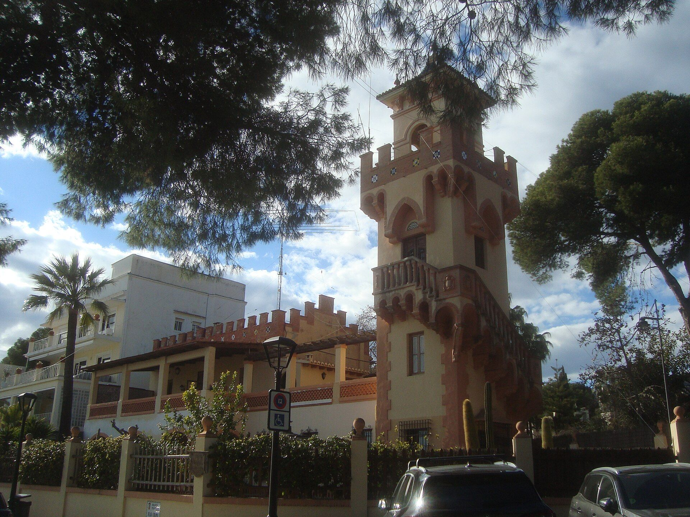

4 · Des lieux à découvrir
Trois endroits à ne pas manquer
-

Le Desert de les Palmes
un parc naturel et un monastère
-

La Vía Verde
une ancienne voie ferrée au bord de la mer
-

La route des Villas
des maisons d'été du début du XXe siècle
6 · Les plus et les moins
+ Les plus
- la mer et la montagne
- l'ambiance de l'été
- les festivals
- mes amis
− Les moins
- en hiver, c'est très calme
- pendant les festivals, c'est bruyant
- les prix montent en été
- il faut souvent la voiture
Crédits
Vols : Google Earth Studio (Data SIO, NOAA, U.S. Navy, Landsat / Copernicus, Airbus). Limites : IGN via geoBoundaries et OpenStreetMap. Photos : Wikimedia Commons.
- Plage de Benicàssim (fin du vol) photo fournie
- La côte vue du ciel Martin Cox from Benicasim, España · CC BY 2.0
- Plage dels Terrers Juan Emilio Prades Bel · CC BY-SA 3.0
- Les Agulles de Santa Àgueda Juan Emilio Prades Bel · CC BY-SA 3.0 es
- Tour de Sant Vicent Artistosteles · CC BY-SA 4.0
- Villa María JavierMunozF · CC BY-SA 4.0
- FIB 2016 ÒscarGarciaHerraiz · CC BY-SA 4.0
- Rototom Sunsplash 2018 Luca Valenta · CC BY-SA 4.0
- Monastère du Desert de les Palmes JavierMunozF · CC BY 4.0
- Vía Verde, falaises RicardoDorda · CC BY-SA 3.0 es
- Villa de la Torre Juan Emilio Prades Bel · CC BY-SA 4.0
- Plage d'Heliópolis Juan Emilio Prades Bel · CC BY-SA 4.0
- Côte d'Orpesa et Benicàssim Millars · CC BY-SA 4.0
- Plage d'Heliópolis Juan Emilio Prades Bel · CC BY-SA 3.0
- Plage de Benicàssim Vcarc · CC BY-SA 3.0